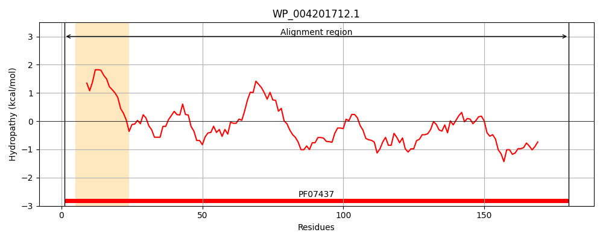
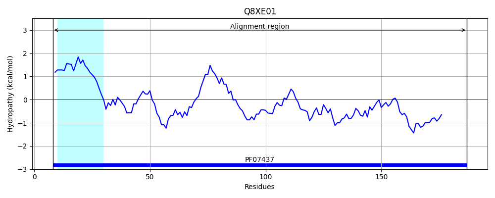
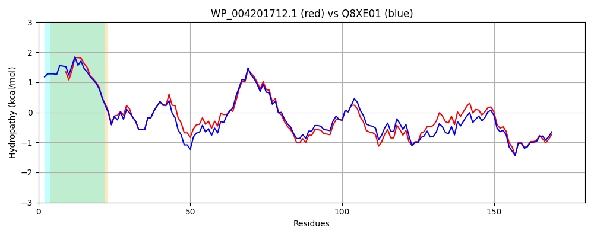

Hit Accession: Q8XE01
Hit TCID: 1.B.68.1.1
Hit Description: gnl|BL_ORD_ID|17038 gnl|TC-DB|Q8XE01|1.B.68.1.1 Uncharacterized protein OS=Escherichia coli O157:H7 GN=ECs3138 PE=4 SV=1
Mach Len: 180
e:0.000000
Query TMS Count : 1
Hit TMS Count: 1
TMS-Overlap Score: 0.950000
Predicted Substrates:CHEBI:25367;molecule
BLAST Alignment:
Score: 762 , Bit scores: 298 bits, E-value: 8.3e-105, Alignment length: 180, Percentage identity: 75
Query: 1 MKKSIFMALAGVMLVSSAAHAISVTGEAGEHYTNLGVGFGTESTGLAVSGNWLHSDNDGDAAGLGLGLNIPLGPFLATVGGKGVYTNPKQGDEGYAAAVGGGLQWKIGDSFRLYGDYYYSPDSLSSGIDSYQEANVGASWTIMRPLSIQAGYRYLNLAGKDGNRDNTIADGPYIGASASF 180
MKK LAG++LVS++ +A+S++G+AG+ YTN+GVGFGTESTGLA+SGNW H+D+DGD AG+GLGLN+PLGP +ATVGGKGVYTNP GDEGYAAAVGGGLQWKIG+SFRL+G+YYYSPDSLSSGI SY+EAN GA +TIMRP+SI+AGYRYLNL+GKDGNRDN +ADGPY+G +ASF
Sbjct: 8 MKKIALAGLAGMLLVSASVNAMSISGQAGKEYTNIGVGFGTESTGLALSGNWTHNDDDGDVAGVGLGLNLPLGPLMATVGGKGVYTNPNYGDEGYAAAVGGGLQWKIGNSFRLFGEYYYSPDSLSSGIKSYEEANAGARYTIMRPVSIEAGYRYLNLSGKDGNRDNAVADGPYVGVNASF 187 | Protein Hydropathy Plots: |
|---|
|  |  |
Pairwise Alignment-Hydropathy Plot:
|
|---|
|  |